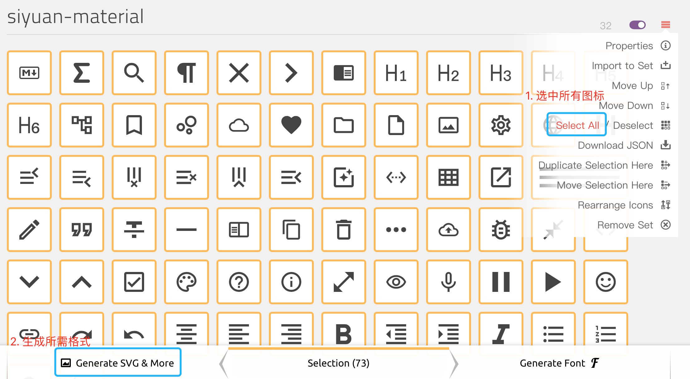

图标
安装
- 1.
获取图标并解压
- 2.
设置 - 外观 - 图标 - 打开图标文件夹
- 3.
将图标拷贝到该文件夹中
- 4.
重启后在 设置 - 外观 - 图标 中选择安装好的图标
开发
步骤
- 1.
为你的图标取一个好听的名字，如
alice - 2.
设置 - 外观 - 图标 - 打开图标文件夹
- 3.
在打开的文件夹中新建文件夹
alice，在alice中新建icon.js和icon.json文件icon.json文件如下：{ "name": "alice", "author": "Vanessa", "url": "https://github.com/Vanessa219", "version": "1.0.0" } - 4.
打开
icon.js文件，贴入制作完成的图标 - 5.
重启 设置 - 外观 - 图标 中选择安装好的图标
图标的制作
-
使用浏览器打开图标文件夹中的
index.html文件 -
根据图标名称和形状制作相似的图标
-
前往 IcoMoon App 制作
icon.js-
点击右上角的
Import Icons导入上一步制作好的图片 -
选中图标并生成 SVG 
-
修改大小并下载

-
修改
<symbol id="icon-markdown" viewBox="0 0 32 32">中的id为index.html对应的图标名 -
将
<defs>...</defs>中的内容替换到icon.js中对应的位置
-
-
测试
-
将
index.html中material替换为alice<script src="material/icon.js"></script> -
刷新
index.html查看最终效果 -
打开思源在 设置 - 外观 - 图标 中选择开发完成的图标进行查看
-
上架图标集市
上架前请确认你的图标仓库根路径下至少包含这三个文件：
-
icon.js
-
icon.json（请确保 JSON 格式正确）
-
preview.png（请压缩图片大小在 128 KB 以内）
确认无误以后请通过对社区集市仓库发起 pull request，修改 icons.json 文件。该文件是所有社区图标仓库的索引，格式为：
{
"repos": [
"username/reponame@commithash"
]
}
其中 commithash 请填写你的图标仓库上最近一次发布版本的 Git 提交哈希值，请使用完整哈希值，不要使用 7 位短值。
更新
如果你开发的图标更新了版本，请记得：
-
更新你的图标配置 icon.json 中的 version 字段
-
再次对社区集市发起 Pull Request